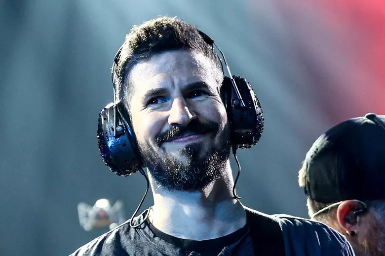

|
Brad Delson: A Journey Through His Life and Career  |
||
|
Early Life Bradford Phillip Delson, known as Brad Delson, was born on December 1, 1977, in Agoura Hills, California. Growing up in a supportive family, Brad developed an early interest in music, particularly rock and metal. He attended Agoura High School, where he met future Linkin Park members Mike Shinoda and Rob Bourdon, and began to explore his passion for guitar. Brad was also a dedicated student, excelling academically alongside his musical pursuits. Education and Early Music Endeavors After graduating from high school, Brad Delson attended the University of California, Los Angeles (UCLA), where he majored in Communications. While at UCLA, Brad continued to focus on his music career, balancing his studies with his role in the band Xero, which later evolved into Linkin Park. Brad graduated summa cum laude in 1999 but chose to pursue music full-time rather than attending law school as he had initially planned. Formation of Linkin Park Brad Delson co-founded the band Xero in 1996 with his high school friends Mike Shinoda and Rob Bourdon. As the lead guitarist, Brad played a crucial role in shaping the band's sound. After recruiting Chester Bennington as the lead vocalist in 1999, the band was renamed Linkin Park. Their debut album, "Hybrid Theory," was released in 2000 and became a massive commercial success, establishing Brad and his bandmates as prominent figures in the rock music scene.
Career with Linkin Park Brad Delson's distinctive guitar playing, characterized by its precise riffs and creative effects, has been a key component of Linkin Park's sound. He is known for his minimalist approach to guitar, often favoring the emotional impact of a few well-placed notes over more complex solos. Brad has been deeply involved in the production of the band's albums and is credited with helping to create the band's signature blend of rock, electronic, and hip-hop elements.
Personal Life Brad Delson is married to Elisa Delson, his high school sweetheart, and the couple has three children. Brad is known for his quiet and humble demeanor, often staying out of the public eye. Despite his reserved nature, he is deeply committed to philanthropy and has been actively involved in the band's charity organization, Music for Relief, which supports disaster relief efforts around the world. Philanthropy and Social Activism Brad Delson is passionate about giving back to the community and has been involved in numerous charitable initiatives. He is particularly focused on environmental causes and education, and his work with Music for Relief has made a significant impact. Brad's commitment to making a positive difference extends beyond his music career, reflecting his values of compassion and responsibility. Legacy and Impact As one of the founding members of Linkin Park, Brad Delson has left an indelible mark on the world of music. His innovative guitar work and contributions to the band's evolution have helped Linkin Park become one of the most influential rock bands of the 21st century. Brad's dedication to both his craft and his charitable efforts continues to inspire fans and musicians alike. |